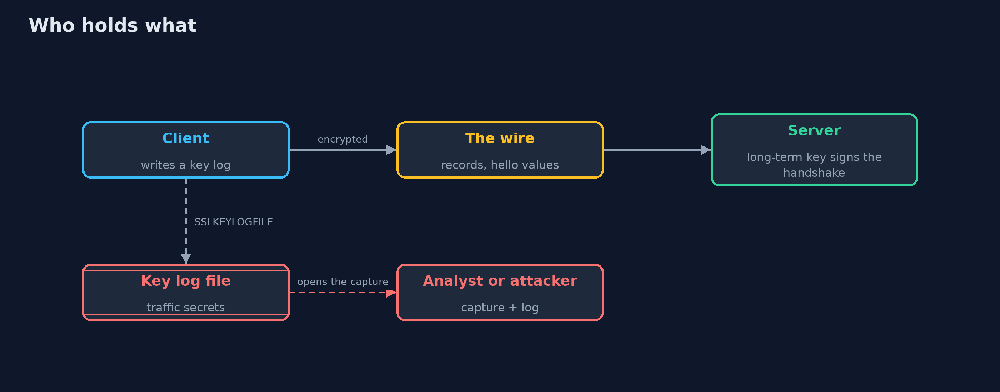
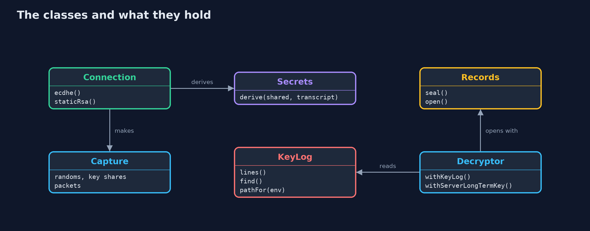
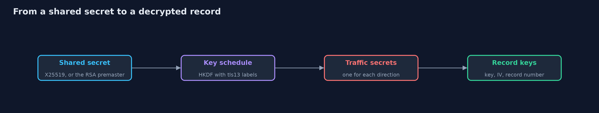
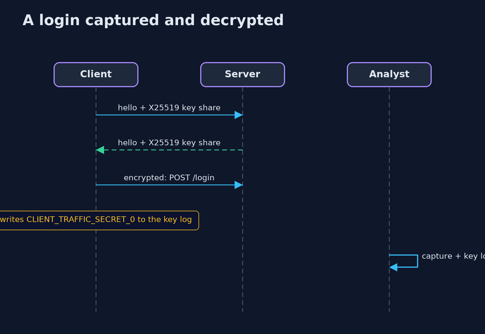

Inspecting TLS Traffic with a Key Log
src/main/java/com/jk/explore/security/tlslog/
├── Capture.java What a network observer (or a packet capture file) holds for one connection: the hello values that are sent in the clear, and the encrypted records
├── Connection.java Makes one connection between a client and a server, in the two ways TLS has made keys: an ephemeral Diffie-Hellman exchange (X25519, as in TLS 1.3), or a secret chosen by the client and encrypted under the server's long-term RSA key (static RSA key exchange, removed in TLS 1.3)
├── Decryptor.java What an analyst can do with a capture, depending on what they hold
├── Hex.java Lower-case hexadecimal, the way key log files and packet tools print bytes
├── Hkdf.java HKDF (RFC 5869) with HMAC-SHA-256, and the two TLS 1.3 helpers built on it (RFC 8446, section 7.1)
├── KeyLog.java The NSS key log format that browsers, curl and Java agents write when {@code SSLKEYLOGFILE} is set and that Wireshark reads: {@code LABEL <client random in hex> <secret in hex>}
├── LabelledRandom.java A repeatable byte stream from a label (SHA-256 in counter mode)
├── Packet.java One thing seen on the wire: who sent it, and the bytes
├── Records.java TLS 1.3 record protection: AES-128-GCM, a nonce made from the IV and the record number, and the record header as additional data
├── Secrets.java The two application traffic secrets of a connection, one for each direction
└── TlsLogDemo.java Runs the capture-and-key-log story in five numbered acts and prints exact, repeatable results
An encrypted capture is unreadable without keys, but a key log file (SSLKEYLOGFILE) holds the traffic secrets of the connections it lists and nothing else, so it is a debugging tool that must never run in production; and forward secrecy is why a leaked server key does not open recorded ephemeral sessions.
When a developer needs to see what an HTTPS client really sent, a packet capture alone shows only encrypted records. The standard answer is a key log: browsers, curl and many libraries write the connection's traffic secrets to the file named by the
SSLKEYLOGFILE environment variable, and tools such as Wireshark read it to decrypt the capture. It is a very useful tool and a dangerous file: it is a recording key for every connection it lists.
This project builds the whole thing in plain Java so that nothing is a black box: a TLS 1.3 style key schedule (HKDF-SHA-256 with the real tls13 labels, X25519 key exchange), AES-128-GCM records with the real nonce and header rules, a capture of what a network observer sees, the NSS key log format, and a
decryptor that works on a capture with different things in hand: nothing, a key log, or the server's long-term private key.
What it shows, in order: - A capture without keys: lengths and the hello values in the clear, but no plaintext. - The key log lines, and a client that refuses to write them in production. - The capture decrypted with the log: a login request with its password. - A log opens only the connections whose lines it holds, and one direction at a time. - Forward secrecy: a leaked long-term server key opens recorded static RSA sessions, and nothing from ephemeral key exchange.
Maps to: OWASP Top 10 (2025) A04 Cryptographic Failures · CWE-312 · CWE-532 · RFC 8446 (TLS 1.3), RFC 5869 (HKDF), RFC 8448 (example traces) · the NSS key log format.
The idea in everyday terms
A recorded phone call is noise until somebody has the key to the scrambler. A key log is a note with that key for specific calls: it lets an engineer listen to the call they are debugging, and it lets anyone who finds the note listen to the same calls. A phone company that uses a fresh scrambler key for each call, and throws it away, cannot be forced to decode last year's recordings even if its master key is stolen.
The scenario
A customer logs in to a shop over an encrypted connection, and a developer captures the traffic. The demo creates connections with repeatable keys, captures what the wire shows, and plays three roles: an observer with no keys, a developer with the key log, and an attacker who later steals the server's long-term key.
Run
./gradlew run
The demo tells the story in 5 acts, each printing exact numbers that the tests check:
| Act | What it shows |
|---|---|
| 1. What the wire shows | An observer sees the hello values and two encrypted records of 70 and 52 bytes; the plaintext, including the word password, is nowhere, and without keys nothing can be decrypted. |
| 2. Writing a key log | The key log variable is ignored when unset, honoured in development and refused in production; each connection gets a client line and a server line named by the client random. |
| 3. Reading the capture with the key log | With the log the capture reads POST /login with user=ana&password=hunter2, and the reply with the session. |
| 4. A key log opens its own connections and no others | Session one's log reads nothing of session two; session two reads with its own lines; with only the client line of session one, only the client's records open. |
| 5. Why the server's own key is a different matter | A server key that leaks a year later decrypts a recorded static-RSA connection completely and an ephemeral one not at all. |
Test
./gradlew test
12 tests in DemoRunsTest, TlsLogTest. Keys come from a labelled generator and the RSA key is never printed, so the demo prints the same text on every run.
What the simulation got right, and what it left out
The key exchange (X25519, RSA-OAEP), HKDF, AES-GCM and the key log format are real and standard; the handshake messages are reduced to the values the key schedule needs (random values, key shares and a hash of the hellos), and certificates are left out because the lesson is about keys. Keys come from a labelled generator so that the bytes, and the demo's output, are the same on every run. That generator must never be used for real keys.
Technologies and versions
Every version below is pinned in the project's build files and was the latest stable release when the project was built.
| Technology | Version | Used for |
|---|---|---|
| Java | 25 | the language and runtime; a Gradle toolchain finds or downloads the JDK |
| Gradle | 9.8.1 (wrapper) | build and run; nothing to install, the wrapper downloads it |
| org.junit.jupiter:junit-jupiter | 6.1.3, set by junit-bom | JUnit 5: the tests (tests only) |
| org.junit.platform:junit-platform-launcher | 6.1.3, set by junit-bom | JUnit platform launcher, which Gradle needs to run the tests (tests only) |
Learning Material
| Document | What it is for |
|---|---|
| Problem statement | the situation and what the project must show |
| Prerequisites | what you need to know first |
| Inspecting TLS Traffic with a Key Log, explained | the acts in prose |
| Session guide | a one-hour lesson with exercises |
| Animated walkthrough | the acts step by step |
| Threat model | what is protected, who could harm it, and how, using STRIDE |
| Spec | what this project must be true of |
| Expected output | the golden demo output every test and every port checks against |
The idea in one picture
The observer sees records; the endpoints hold the secrets; the key log is a copy of the secrets.

Where each piece sits
A connection makes secrets and a capture; the decryptor works from the capture and a key source.

How the data moves
Anyone who holds a traffic secret can run the last two steps.

Who calls whom, in order

What it costs
- A key log is a plaintext secret. Anyone who can read the file and the capture can read the sessions; protect it like a password file and delete it after use.
- Debugging in production is tempting and wrong. Make the setting impossible there, as the demo's check does, and monitor for the variable.
- Forward secrecy needs ephemeral key exchange, which every TLS 1.3 connection has; older configurations that still offer static RSA give it up.
- Decrypting traffic you may not read is a privacy matter as well as a technical one: inspect only your own test traffic.
- Key logs are per connection, so long captures need many lines, and a log that is missing a line for a resumed or renegotiated session gives an incomplete picture.
When this is too much
If you only need to know what a library sent, log at the application layer (the request object) in a test, and leave TLS alone. A proxy you control and your own test CA is another way to see your client's traffic without writing secrets to disk.
Where you have already met this
- Wireshark's "Pre-Master-Secret log filename" setting.
SSLKEYLOGFILE=/tmp/keys.logbefore starting a browser orcurl.- Java's
-Djavax.net.debug=ssloutput, which prints handshake detail (and in some versions secrets). - The advice to turn off static RSA cipher suites.
Where this sits
This project is in tls-in-practice and follows tls-misconfigurations, which flags suites without forward secrecy. It builds on the beginner tls-handshake project, and on the hashing and key-exchange ideas in the beginner cryptography track.